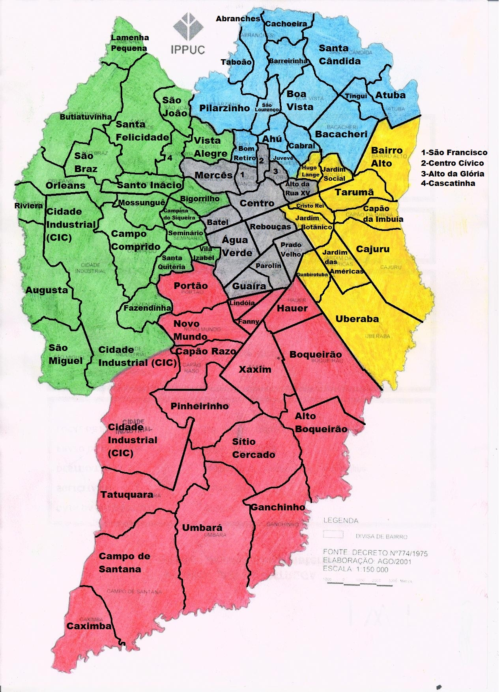

Sobre os locais turísticos de Curitiba
Localizada no coração do Paraná: Turismo em Curitiba o melhor para suas viagens, venha aproveitar nosso clima estranho você também.
Nossa missão é: "Proporcionar uma viagem de qualidade para os nossos leitores. ".
Oferecemos lugares de ótima qualidade para o seu aproveito.
Nosso estabelecimento
Nosso estabelecimento está localizado no coração da cidade.
Os lugares mais visitados:
- Jardim Botânico
- Ópera de arame
- Terrazza
- Parque Barigui
- Teatro Positivo
- Museu Oscar Niemeyer